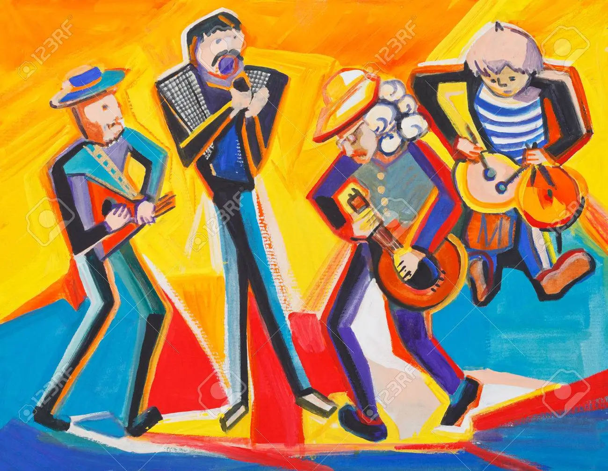
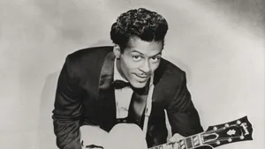
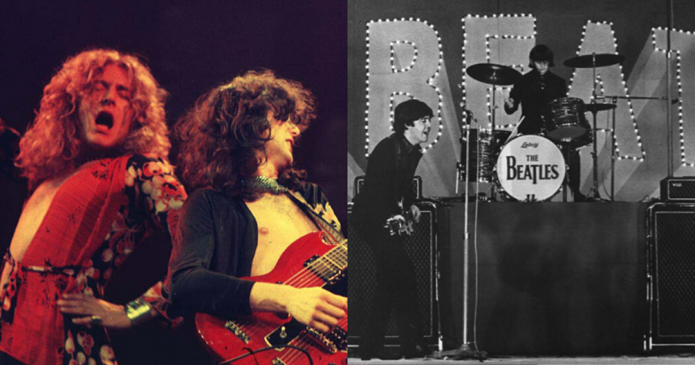

About
Classic rock trully influenced many future bands and provided enjoyment for many people over the years. Classic rock has roots in both Blus and Jazz, taking elements from both.
One of the most influencial people who pioneered the way for Classic rock was Chuck Berry. He paved the way for many other artist to come with his fast guitar riffs and upbeat songs. He revolutionized the style for songs and provided influence for many future bands to come. Next was the King, Elvis Preasley.
Elvis took heavy inspration from Chuck Berry's music and others like him. With hits like 'Hound Dog' and 'Jailhouse Rock', he quickly rose to the top in the US. His music was less heavy and had more of a "happy go lucky" feeling to it. He set the stage and the standard for live music for decades to come.
In the Uk, The Beatles had just come out with their First album, Please Please Me, and everyone loved it. The Fab four quickly rose to rival Elvis and other group-breaking artist from their time. Towards the end of the 60's, there was an explosion of bands from the Uk, US, and Canada. These included led Zepplin, The Rolling Stones, Queen, Lynard Skynard, Bruce Springsteen, The Guess Who, The Who, April Wine, AC/DC, ZZtop, and many more.
The 80's brought the intro of disco music and punk rock, which greatly influenced some of the rock'n'roll artists of the time. Songs became more upbeat and heavy instraments became more advanced with new ways to play them.